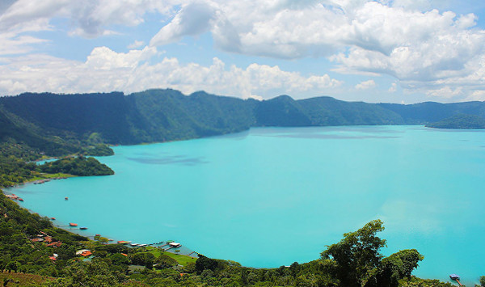

Coctel de Caracoles Lago
Coatepeque:

Ingredientes:
- 2 1/2- litros de agua
- 5- libras de caracol.
- 3- cebollas.
- 10- limones grandes.
- 2 1/2- cucharadas de cilantro picado.
- 2 1/2- cucharaditas de hierva buena.
- 6-tomates grandes.
- 1 1/2- Cucharada de salsa inglesa.
- 1 1/2 -cucharadas de salsa picante
sal al gusto.
Procedimiento:
1-Poner a herver los caracoles en los 2 1/2 litros de agua por 10 minutos.
2- Retirar la carne de los caracoles y limpiarla muy bien,
pasamos por agua tibia con limón.
3-Cortar la carne en trocitos y agregar todo el
jugo de limón, la salsa inglesa,
salsa picante y sal al gusto.
4-agregar los demás ingredientes finamente picados,
dejar reposar por unos 20 minutos.
Servir en una coctelera.
Tiempo de preparación: 60 minutos.
Nivel de Dificultad: Facíl.
Rinde: 7 porciones.